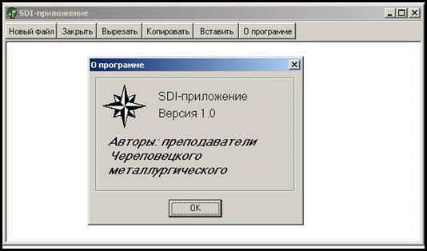
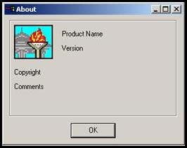
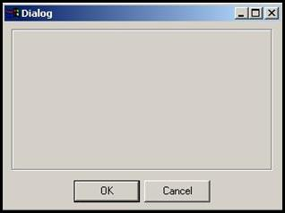
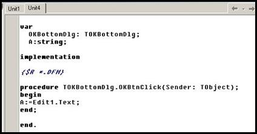
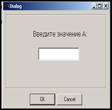

Формы
Форма может быть:
- главным окном приложения;
- диалоговым окном;
- дочерним окном MDI-окна.
Специализация формы в этом случае определяется свойством FormStyle:
- fsNormal – обычное окно;
- fsMDIChild – дочернее окно приложения MDI;
- fsMDIForm – главное окно MDI.
В заголовке любой формы есть набор системных кнопок. Он определяется свойством BorderIcons. По умолчанию у формы имеются 3 кнопки – для вызова системного меню, сворачивания и разворачивания окна. Кнопка закрытия окна не описана, потому что присутствует всегда.
Вид окна во многом определяется стилем обрамления. Во время разработки стиль обрамления себя не проявляет. Изменения с окном происходят только во время выполнения программы. Стиль обрамления задается свойством BorderStyle.
- bsNone – окно без рамки, заголовка и системных кнопок. Размеры обычно не меняет. Применяется для создания окон-заставок для долго устанавливаемых приложений.
- BsSingle – стандартное окно без изменения размеров;
- BsSizeable – стандартное окно с изменением размеров;
- BsDialog – стандартное диалоговое окно без системных кнопок и изменения размеров;
- BsToolWindow – окно панели инструментов без изменения размеров;
- BsSizeToolWindow – окно панели инструментов с изменением размеров.
Каждое окно может находиться в одном из трех состояний: нормальном, свернутом и развернутом. За это отвечает свойство WindowState.
Местоположение окна на экране определяет свойство Position.
- poDesigned – позиция определена в режиме проектирования;
- poScreenCenter – окно появляется в центре экрана.
Свойство Icons определяет значок для свернутого приложения.
У каждой формы может быть главное меню. Это определено в свойстве Menu. Контекстное меню задается в свойстве PopupMenu. В этих свойствах указывается имя компонента меню.
Свойство ActiveControl определяет элемент управления, имеющий фокус ввода.
Свойство ActiveMDIChild определяет активное дочернее окно MDI-приложения.
Свойство KeyPreView определяет, будет ли форма получать события от клавиатуры раньше, чем элементы управления (True). Клавиши управления курсором не инициируют событий и это свойство на них не влияет.
Методы
Создание формы .
В стандартном приложении создает и удаляет формы само приложение. Правила создания форм задаются в параметрах проекта (страница Forms). Формы могут создаваться автоматически, тогда они заносятся в список Auto-Create forms. В другом случае формы создаются программно через конструктор Create или метод Application.CreateForm. Форма, которая создается первой, считается главной. Создание дополнительных форм во время работы приложения экономит память и время. Такие формы нужно занести в список Avialable forms.
Показ формы .
Для того, чтобы из одной формы вызвать другую, применяется метод Show:
Form2.Show.
Вызванная форма становится видимой и располагается поверх других окон.
Скрытие формы
Для того, чтобы сделать форму невидимой, используется метод Hide:
Form2.Hide
Обычно не применяется к главной форме.
Закрытие формы
Для закрытия используется метод Close. При закрытии главного окна предварительно закрываются все дочерние окна. В обработчик события OnClose обычно встраивают дополнительные операции по сохранению текущего файла и проверке возможности закрытия программы.
Работа с несколькими формами
При вызове одного окна из другого новое окно может появляться в двух режимах: модальном и немодальном.
Модальное окно принимает фокус ввода и до его закрытия вернуться в главное окно нельзя. Для вызова окна в таком режиме используется метод ShowModal:
Form2.ShowModal
При закрытии модального окна изменяется его свойство ModalRewsult. Это свойство хранит информацию о результате закрытия окна.
Немодальное окно вызывается методом Show и позволяет возвращаться в главное окно без своего закрытия.
Для создания новой формы выберите File | New Form. Имя модуля дочерней формы должно быть указано в списке Uses интерфейсного раздела модуля главной формы. Другой способ подключения дочерней формы – пункт меню File | Use Unit, где нужно указать имя подключаемого модуля. В этом случае подключение выполняется в разделе выполнения модуля главной формы.
Существует два основных способа взаимодействия главного и дочерних окон: однодокументный интерфейс (SDI) и многодокументный интерфейс (MDI).
В SDI главная форма появляется при запуске приложения и объединяет в себе все важнейшие функции управления. Из нее запускаются дочерние формы. Дочерние формы относительно самостоятельны. Они могут располагаться в любом месте экрана, даже перекрывая главную форму. Дочерние формы могут вызываться одна из другой. Окна SDI можно запускать в модальном режиме. Для всех форм значение свойства FormStyle = fsNormal. Главной считается форма, которая создается первой.
На основе SDI построена Delphi. Имеется шаблон SDI-приложения, который можно вызвать из репозитория объектов: File | New | Projects | SDI Applications. Этот шаблон создает две формы: главную и О программе (About). На главной форме имеется главное меню и стандартная панель инструментов.
Однодокументный интерфейс (SDI – Single Document Interface) определяет способ взаимодействия главного и дочерних окон приложения. Он позволяет работать одновременно только с одним документом. Этот интерфейс является более универсальным и в настоящее время получил широкое распространение.
Характеристики SDI-приложения:
- Главное окно SDI появляется при запуске приложения. Оно объединяет все важнейшие функции управления;
- Дочерние окна вызываются из главного окна или из других дочерних окон;
- Дочерние окна относительно самостоятельны и связаны с главным через данные. Они могут располагаться в любой части экрана даже поверх главного окна;
- При сворачивании главного окна сворачиваются и все дочерние окна;
- При закрытии главного окна предварительно закрываются все дочерние окна.
Пример SDI-приложения приведен на рисунке 1.

Рисунок 1 – Пример SDI-приложения
1 – панель инструментов главного окна;
2 – главное окно;
3 – дочернее окно.
У всех окон SDI-приложения свойство FormStyle имеет значение fsNormal.
Дочерние окна могут вызываться в двух режимах: модальном и немодальном.
Модальный режим - такой режим вызова дочернего окна, когда до его закрытия перейти в другие окна приложения нельзя.
Немодальный режим – такой режим вызова дочернего окна, который позволяет перемещаться между разными окнами приложения.
Для вызова дочернего окна в модальном режиме используется метод ShowModal, а в немодальном режиме – Show.
Передача информации между окнами SDI-приложения ведется через глобальные переменные, которые объявляются в интерфейсном разделе модуля после служебного слова var. Нужно следить за тем, чтобы передающий информацию модуль был «виден» модулю, получающему информацию. Если для настройки параметров главного окна используется дочернее диалоговое окно, то переменные, хранящие значения параметров, объявляются в модуле диалогового окна. Модуль диалогового окна должен быть подключен к модулю главного окна.
Шаблоны форм
В Delphi имеется целый ряд шаблонов форм, которые пользователь может использовать при создании своих приложений. Шаблоны хранятся в Репозитории объектов Delphi (Object Repository). Репозиторий – своеобразный склад готовых объектов, который можно вызвать через главное меню Delphi: File | New. Шаблоны форм находятся на странице Forms. Шаблоны диалоговых окон находятся на странице Dialogs.
Среди шаблонов форм есть шаблон AboutBox, показанный на рисунке 2.

Рисунок 2 – Шаблон AboutBox.
Шаблон AboutBox представляет собой стандартное окно «О программе», которое содержит название программы, информацию о версии и авторе. Ему соответствует полностью готовый модуль. Программист изменяет тексты в шаблоне и вставляет свою картинку. Далее этот модуль следует подключить к модулю главного окна и написать обработчик для кнопки «О программе».
Среди шаблонов диалоговых окон есть шаблон Standard Dialog, предназначенный для создания диалогового окна. Он показан на рисунке 3.

Рисунок 3 - Шаблон Standard Dialog.
На шаблон Standard Dialog помещаются необходимые для ввода информации компоненты и метки для создания пояснений. В модуле диалогового окна объявляются глобальные переменные, с помощью которых информация передается в модуль главного окна. Пример передачи информации показан на рисунке 4.
 
Рисунок 4 – Пример передачи информации из дочернего окна
1 – вид формы диалогового окна;
2 – текст модуля диалогового окна с объявлением и использованием глобальной переменной А.